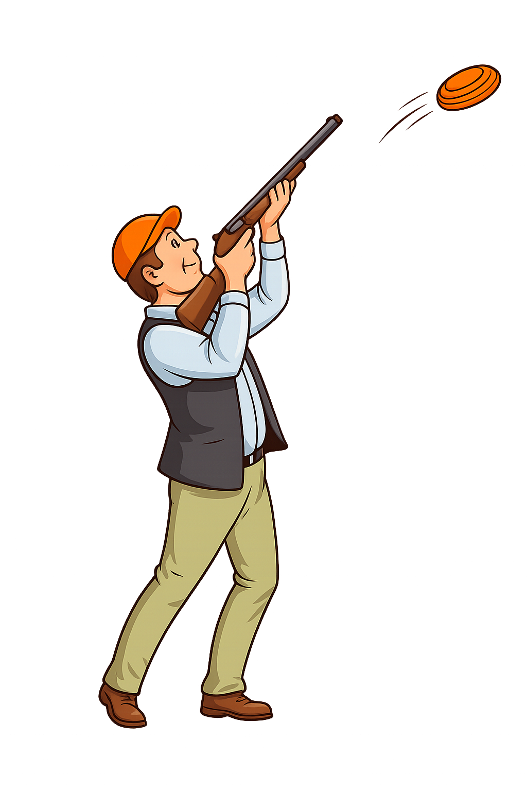
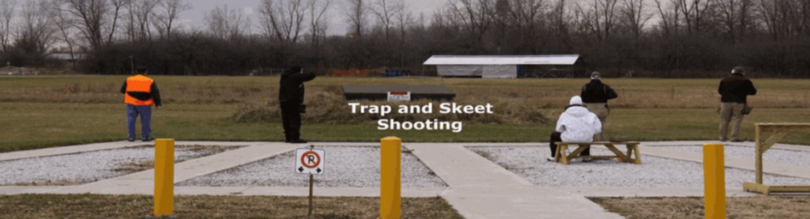
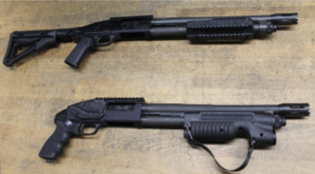

I hate saying this, but, it's time to close.
The temps are forecasted to drop below freezing soon.
We had some great fall weather this year, with many nice days to enjoy our sport.
Let's look forward to the spring, or maybe even before then if the berm gets completed and approved by the CFO.
I'll sign off for now.
All the best to everyone, be safe, and have a great holiday.
Phil

Trappers Required For The Ranges
The trap and skeet ranges require trappers to attend on Saturdays and Sundays.
Typically we work with teenagers who are not afraid to do some heavy lifting.
We will train and supervise their activity. For their efforts, they receive a
daily stipend and their work hours qualify for their community volunteer hours
which are required for graduation from high school. The Trappers fill machines
with clay targets, general cleanup, act as a trapper on the trap range to pull
targets and keep score, raise and lower the shot curtains, etc. If you know of
a teenager who might be interested in a summer job, please contact me at
daveroberts2943@outlook.com
Thank you. Dave Roberts, Chief Range Officer
Updated Oct 2025
RANGE FACILITIES: One Trap Field, One Skeet Field,
One Pattern Board
HOURS OF OPERATION:
Saturday: Skeet and Trap from 9am to 3pm
Sunday: Skeet and Trap from 9am to 1pm
Ranges closed on the last Sunday of each month
Ranges will close for the season approx. end of October.
FEES: (per round of 25 clay targets)
WSC Members with a trap & Skeet Associate Membership $8.00.
Trap & Skeet Associate membership $75.00 annually. (Available at Skeet Range)
Non-members $10.00 and a $10.00 day Fee.
Teenagers $5.00. (Day fee not applicable)
Shooters Cards Available — Buy ten rounds and get one free bonus round.
Ear and eye protection mandatory. We have loaner pairs to use.
We do not sell shotgun shells. We do not rent firearms.
Trap shooting use #7 1/2 or #8 size shot only.
Skeet shooting use #9 size shot only.
Range reservations available for special events such as stags, hunting clubs, etc.
1. Safety glasses and hearing protection must be worn on the firing line and in the general vicinity of the ranges.
2. All shooters MUST be in possession of a valid Firearms License (PAL), or be accompanied by a person with a valid Firearms License (PAL).
3. Drugs or alcohol are not allowed in the vicinity of the ranges. The use of alcohol or recreational drugs prior to, or during shooting is strictly prohibited.
4. Skeet Range: Maximum 12-gauge shotgun. Minimum barrel length 26"
• Only 2¾” shells allowed, #9 shot only. Two shells may be loaded on Station 1 through Station 7.
Only one shell may be loaded on Station 8. Shells are not allowed in the chamber or magazine
until it is your turn to shoot. All actions must remain open until you are in position on the
shooting station.
• (Note: Barrels shorter than 26" may be allowed if the gun was designed for Skeet shooting).
Tactical style shotguns are not permitted.
5. Trap Range: Maximum 12-gauge shotgun. Minimum barrel length 26"
• Only 2¾” shells allowed, #7 ½ shot size or smaller is allowed. Only one shell is allowed to
be loaded in the chamber or magazine when shooting singles. Shells are not allowed in the
chamber or magazine until it is your turn to shoot. All actions must remain open until you
are in position on the shooting station.
Tactical style shotguns are not permitted.
6. Safe muzzle direction and firearm control must be maintained at all times.
7. After a misfire or hang-fire, the action must remain closed for 60 seconds with the muzzle
pointed in a safe direction. Open action, remove the shell and visually inspect the barrel
for any obstruction. Do not dispose of any unfired shells (duds) in the garbage or on club
property.
8. Transporting shotgun from or to your personal vehicle, and to or from the firing line,
the following safety procedure must be followed:
• Firearm is PROVED Safe, action open on all shotguns. Pumps and Semi-autos must be carried
barrel up. Firearms are placed directly into the gun rack at the range. Pumps and Semi-autos
must have actions open while in gun rack.
• Moving to and from the firing line; Prove Safe, actions open, barrel up until you are in
position to shoot (Para 6 now applies).
9. Obey and support all Range Safety Officer commands.
10. All firearms are to be carried to and from the firing line and between stations unloaded
with the action open and the muzzle pointed straight up or down. Control your Firearm and
muzzle direction at all times.
11. At the end of the round, return your firearm to the gun rack then pick up your spent hulls.
Do not pick up hulls during the round or when moving to the next station. Pick up hulls only
at the end of the round after your firearm is in the gun rack. Do not walk onto the field to
retrieve spent hulls while others are preparing to shoot.
12. Slings, shotshell holders and any other firearm accessories must be removed prior to
attending the firing lines.
SAFETY AND COMMON SENSE ARE IMPORTANT…!!!
When in doubt, ask questions and check it out…!!!

Revised and in effect as of - October 15, 2025